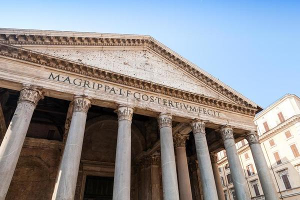
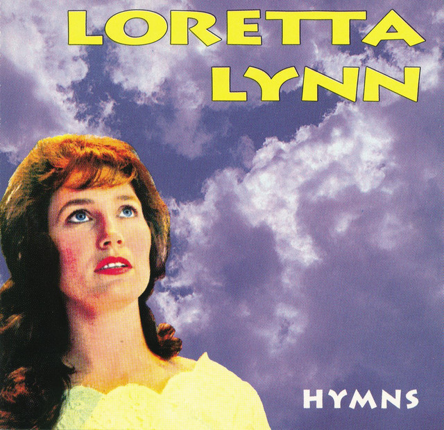
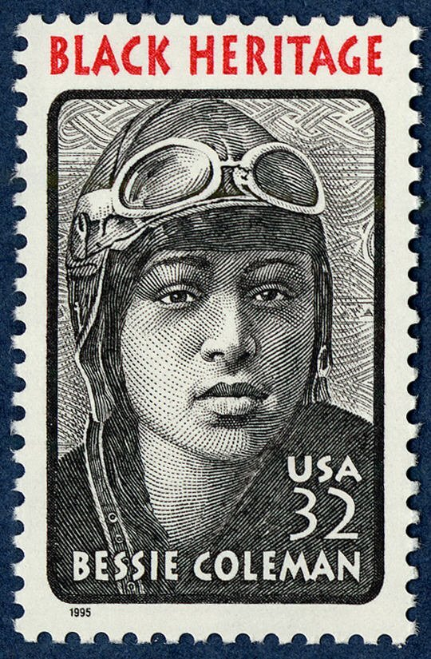
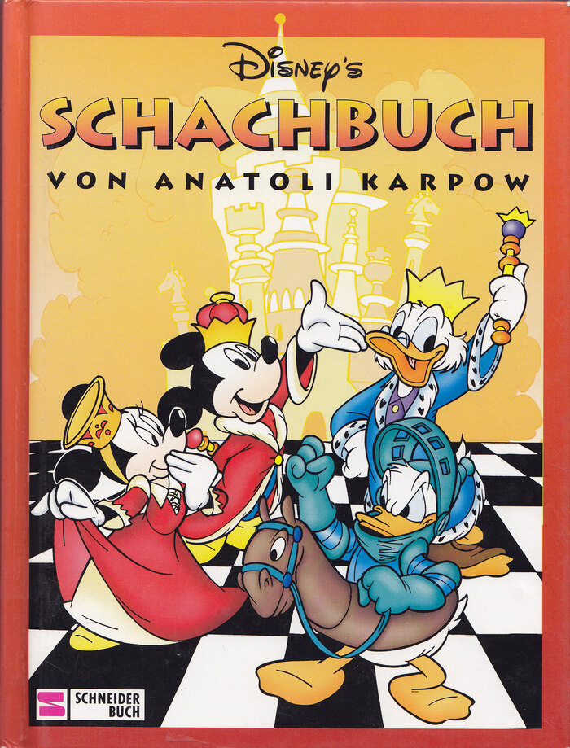
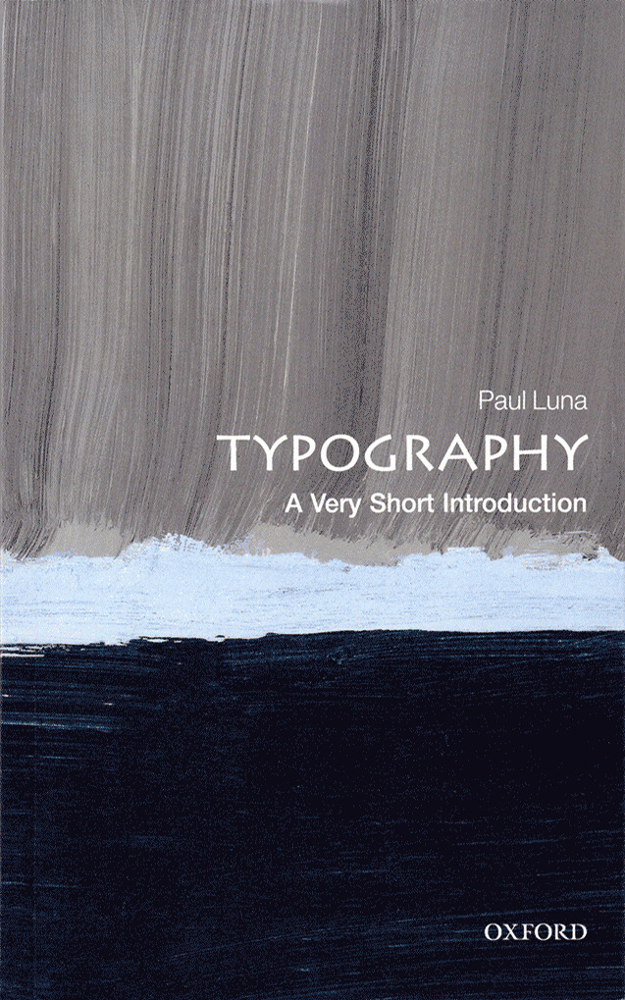
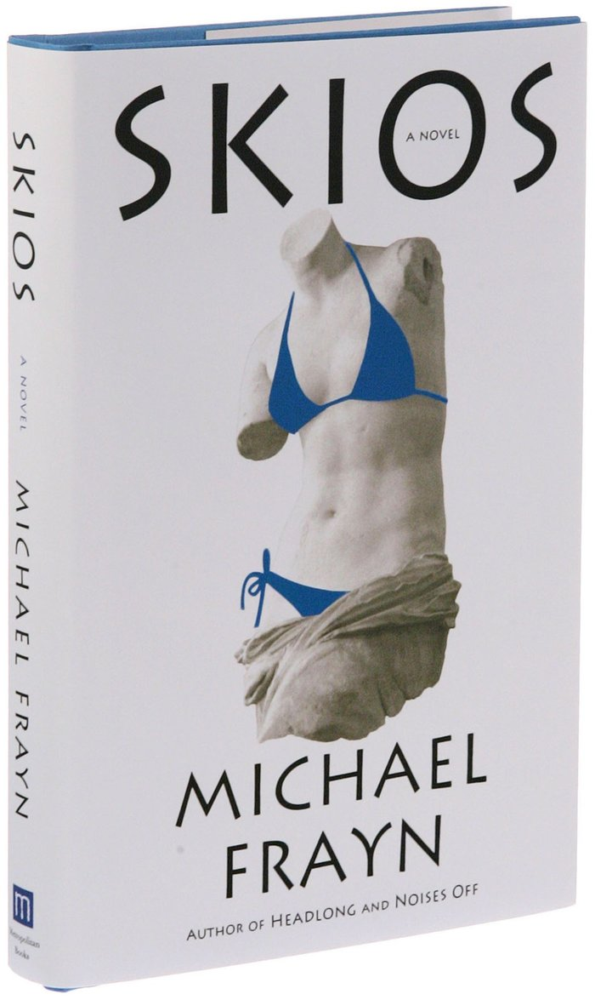
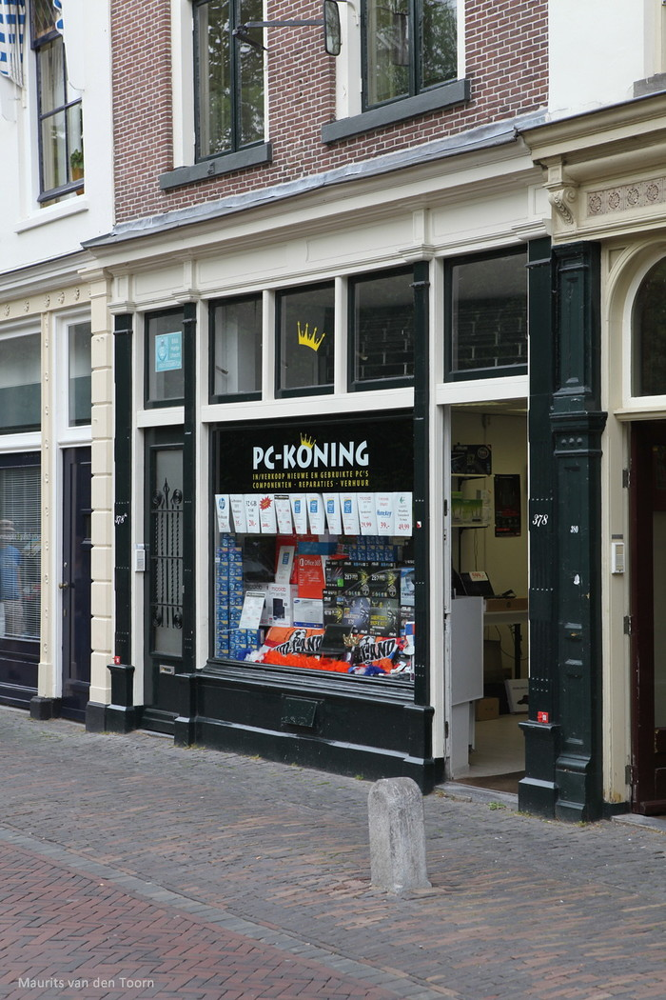
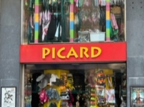

Op deze pagina is veel informatie te vinden over het font 'Lithos Pro'. Het Font is ontworpen door Carol Twombly en is een erg onderscheidend lettertype.
Het staat bekend om zijn unieke en enigzins futuristische uitstraling. Dit maakt het font geschikt voor veel uiteenlopende ontwerptoepassingen.
Over de geschiedenis, oorsprong, kenmerken en nog veel meer over het font is veel te lezen op deze pagina.
A
Algemene informatie
'Lithos Pro' valt in de categorie van slab-serif-lettertypen. Deze lettertypen worden gekenmerkt door hun dikke, blokachtige schreefletters. Het meest opvallende aan het lettertype is dus ook het gedurfte geometrische ontwerp. De letters hebben een sterke, hoekige structuur met een gevoel van stevigheid en gewicht. Dit is erg goed te zien bij de letter A, maar ook in de volledige zin hieronder weergegeven. Daarom wordt het lettertype 'Lithos Pro' vaak gekozen voor projecten die een gevoel van kracht of monumentaliteit willen overbrengen. Het wordt vaak gebruikt in koppen, logo's, posters en andere weergavetypografie. Het wordt doorgaans niet gebruikt voor hoofdtekst vanwege het gedurfte en opvallende karakter ervan. 'Lithos Pro' bevat een uitgebreide tekenset die meerdere talen ondersteunt, waaronder de op het Latijn gebaseerde talen Grieks en Cyrillisch. Het is een commercieel lettertype onder andere te koop bij Adobe Fonts.
The quick brown fox jumpsover the lazy dog
Geschiedenis
Het lettertype haalt inspiratie uit oude inscripties en lettervormen die te vinden zijn op steengravures en monumenten, vooral die uit de Griekse en Romeinse beschavingen. Zie bijvoorbeeld de foto hiernaast van het Pantheon in Rome. 'Lithos Pro' probeert het gebeitelde en hoekige uiterlijk na te bootsen van in steen gebeitelde letters. De naam van het lettertype 'Lithos', is afgeleid van het Griekse woord voor 'steen'. Deze naam weerspiegelt de historische inspiratie en de visuele indruk van de stenen beelden. Sinds de release van het originele 'Lithos' ontwerp in 1989 is het lettertype heel populair geweest. Om aan deze vraag te kunnen voldoen is 'Lithos Pro' uitgebracht in 2000. Aan dit lettertype is meer ondersteuning voor de Griekse taal toegevoegd, met kapitalen en kleine cijfers.

Type hier je eigen tekst
Type hier je eigen tekst
Type hier je eigen tekst
Type hier je eigen tekst
Type hier je eigen tekst
Zoals hierboven te zien is, is het font in meerdere varianten beschikbaar, waaronder normale, vetgedrukte en cursieve stijlen. Dankzij deze variaties kunnen ontwerpers het lettertype op een flexibelere manier gebruiken om nadruk te leggen of verschillende ontwerpeffecten te bereiken. Lithos Pro is beschikbaar in digitale formaten zoals TrueType (TTF) en OpenType (OTF), die breed worden ondersteund door grafische ontwerpsoftware, waardoor het font toegankelijk is voor verschillende digitale en gedrukte projecten.
Carol Twombly
Carol Twombly is een Amerikaanse kalligrafiste en letterontwerper, geboren op 13 juni 1959. Haar carrière begon aan de Rhode Island School of Design (RISD), hier leerde ze voornamelijk beeldhouwkunst. Haar passie voor letterontwerp is verder onstaan door haar studie grafisch ontwerp. Van 1988 tot 1999 werkte ze bij Adobe Systems als letterontwerper. Een van haar meest invloedrijke lettertype is Adobe Caslon, een herinterpretatie van de klassieke Caslon-letter, oorspronkelijk ontworpen door William Caslon. Adobe Caslon staat bekend om zijn elegante vormen en uitstekende leesbaarheid, waardoor het een veelgebruikte keuze is voor drukwerk, boeken en tijdschriften. Een andere belangrijke ontwerp van Twombly is Myriad, ontwikkeld in samenwerking met Robert Slimbach voor Adobe Systems. Myriad is veelzijdig en wordt zowel in gedrukte als digitale media gewaardeerd vanwege zijn moderne en strakke ontwerp. Lithos Pro is een ander opmerkelijk lettertype dat ze heeft ontworpen, geïnspireerd door klassieke inscripties en oude Griekse belettering. Het valt op door zijn hoekige vormen en gebeitelde uitstraling, waardoor het een favoriet is in ontwerpen waar een krachtig en monumentaal gevoel gewenst is. Carol Twombly heeft met haar ontwerpen een grote impact op de wereld van typografie achtergelaten en wordt beschouwd als een invloedrijk figuur in dit vakgebied. Haar lettertypen zijn erg geliefd en veelgebruikt door grafische ontwerpers over de hele wereld.
abcdefghijklmnopqrstuvwxyz
0123456789
~!@_^&:;'",.$¢€£¤+-*/%=(){}[]<>?¿¡\
àáâãäæçèéëìíîïÐñòóôöøùúûüý
Hierboven zijn een groot deel van de karakters van het font Lithos Pro te zien. Het font ondersteund ook meerdere talen, bijvoorbeeld Grieks en Cyrillisch. Daarnaast bestaat het font voornamelijk uit hoofdletters, deze zijn groot, opvallend en goed geschikt voor het trekken van aandacht. De meest opvallende karakters van het lettertype zijn misschien wel degene met rondingen. Het font straalt een sterke, hoekige structuur uit met een gevoel van stevigheid en gewicht. Maar de mooie bochten in bijvoorbeeld de c, o, u en y stralen dit niet direct uit.
Voorbeelden

Loretta Lynn – 1991

Black Heritage - 1995

Disney’s Schachbuch by Anatoly Karpov - 1998

A Very Short Introduction book series by Oxford University Press - 2000

Skios by Michael Frayn - 2012

PC-Koning Utrecht - 2020
Eigen inzichten
Tijdens het bezoek aan Brussel keek ik al erg om me heen naar verschillende lettertypen. Van mijn 30 verzamelde foto's had ik een top 3 opgesteld. Uiteindelijk is het lettertype gekozen wat op mijn plaats 3 stond, omdat ik het er wat kinderactig uit vond zien. Op de foto hiernaast is het lettertype te zien op de gevel van een feestwinkel, daar ben ik dit lettertype ook tegengekomen. Maar toen ik met het onderzoek naar het lettertype starte, kwam ik erachter dat het een erg interessante achtergrond heeft. Dat het lettertype gebaseerd is op het gebeitelde en hoekige uiterlijk van in steen gebeitelde letters had ik nooit gedacht. Ik vond het dus erg leerzaam om hier onderzoek naar te doen en er meer over te weten te komen.
